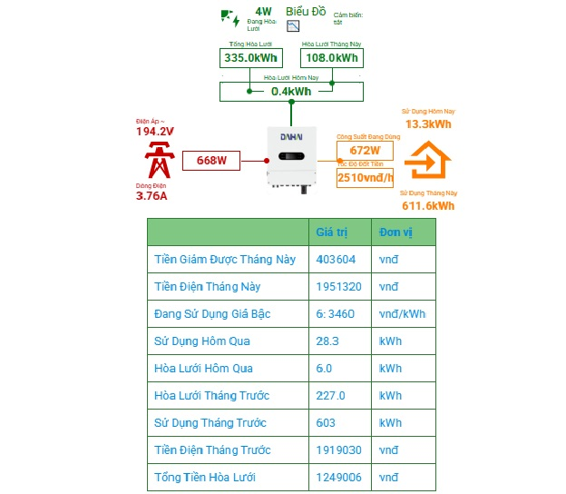

Công Tơ Điện Thông Minh
Công tơ điện thông minh là hệ thống thiết bị đo công suất tiêu thụ điện của gia đình bạn và công suất của biến tần hòa lưới trực tiếp (Micro Inverter) hoặc biến tần nội địa Nháºt, nhằm tÁnh toà n công suất dư thừa và triệt tiêu chúng nếu có. Để đảm bảo không có lượng điện dư nà o bị đẩy ngược ra công tơ của EVN.
Bạn có thể dùng điện thoại để theo dõi các chỉ số từ xa thông qua dịch vụ miễn phà của google.
Giải pháp nà y giúp má»i người tiếp cáºn với năng lượng mặt trá»i theo hướng rẻ và hiệu quả nhất.
Dự án nà y là miễn phÁ.
Cần tư vấn vui lòng nhắn tin Zalo 0971.282.336 (Không gá»i)
Giao diện theo dõi hoà n toà n mới.

Các bạn truy cáºp kênh youtube của mình để xem nhiá»u video hơn nhé: https://youtube.com/@nwhp234
Video chạy thực tế khả năng đốt công suất dư thừa (Giao diện cũ).
Dự Án Nà y Đã Dừng Phát Triển
Giá bán của các biến tần hòa lưới bám tải chÁnh hãng đã giảm nhiá»u trong thá»i gian qua.
Sản phẩm do người Việt Nam là m chủ đã có mặt trên thị trường.
Biến tần hòa lưới bám tải Mạnh Quân, chỉ hơn 3 triệu công suất 2kW: https://s.shopee.vn/1LWlmbVsPA
Biến tần hòa lưới bám tải Gia Bảo, chỉ hơn 2 triệu công suất 1.9kW: https://www.facebook.com/giabao.ngo.94009
Kinh tế, hiệu quả, dễ lắp đặt, dễ tiếp cáºn hơn rất nhiá»u so với việc sá» dụng Micro Inverter + mạch bám tải rá»i, nên mình quyết định dừng phát triển dự án và ngừng cung cấp phần má»m cho người dùng 👇
Chuẩn Bị Phần Cứng
Link mua mạch điá»u khiển (mua 1 mạch): https://shopee.vn/MạchĐiá»uKhiển
Link mua Pzem 004T v3.0 (mua 2 mạch): https://shopee.vn/Pzem004tV3.0
Link mua mạch đốt công suất dư thừa: https://shopee.vn/MạchĐốtCôngSuấtDưthừa hoặc Shop nà y
Link mua Micro Inver (600w hoặc 1200w).https://shopee.vn/MicroInverter
Nếu bạn đang dùng Micro Inverter có công suất > 250w, hãy mua thêm 1 con Triac BTA41-600 để thay cho triac BT138 có sẵn ở mạch đốt 👆
MỠhà n thiếc hoặc ra quán điện thoại nhỠhà n hộ mạch esp8266<--->pzem004<--->mạchđốt theo sơ đồ dưới:
Bạn có thể nối dà i các dây tÁn hiệu D1, D2, D5, D6, D7, 5v, 3v3, pwm, GND, nhưng không được nối dà i dây của 2 cục CT .
Dây 5v (+) và dây GND (-) nối chung với nhau.

Nạp Phần Má»m Cho Thiết Bị
Đây là cách nạp phần má»m cho mạch wifi (esp8266).
Driver cho máy tÁnh, tải vá» tại đây.
ESP8266Flasher cho Windows x86 (32 bit), tải vá»: tại đây.
ESP8266Flasher cho Windows x64 (64 bit), tải vá»: tại đây.
Phần má»m nạp cho mạch ESP8266, tải vá»:
Cà i Driver sau đó mở chương trình ESP8266Flasher.exe
Kết nối thiết bị với máy tình bằng dây cáp USB
 Chá»n và o "Config" - sau đó bấm và o bánh răng giống như hình dưới. Tìm tới vị trà lưu file Firmware.bin bạn vừa tải vá».
Chá»n và o "Config" - sau đó bấm và o bánh răng giống như hình dưới. Tìm tới vị trà lưu file Firmware.bin bạn vừa tải vá».
 Chá»n và o "Operation" - sau đó bấm và o COM port, chá»n COM của bạn.
Bấm và o FLASH giống như hình dưới
Chá»n và o "Operation" - sau đó bấm và o COM port, chá»n COM của bạn.
Bấm và o FLASH giống như hình dưới
 Chá» chÆ°Æ¡ng trình nạp xong và hiển thị dấu tÁch mà u xanh giống như hình dưới là xong.
Chá» chÆ°Æ¡ng trình nạp xong và hiển thị dấu tÁch mà u xanh giống như hình dưới là xong.
 Sau khi nạp xong phần má»m, bạn cấp nguồn cho thiết bị, và truy cáºp và o wifi 0971282336 do thiết bị phát ra.
Sau khi nạp xong phần má»m, bạn cấp nguồn cho thiết bị, và truy cáºp và o wifi 0971282336 do thiết bị phát ra.
 Rồi mở trình duyệt web truy cáºp 192.168.4.1
Rồi mở trình duyệt web truy cáºp 192.168.4.1
Váºy là đã kết nối thiết bị với wifi nhà bạn thà nh công
Hướng Dẫn Nháºp Lệnh Điá»u Khiển
Bạn kết nối với wifi
0971282336 do thiết bị phát ra.
Dùng trình duyệt web truy cáºp
192.168.4.1
Để thiết bị hoạt động đúng theo mong muốn của bạn, vui lòng nháºp các lệnh dưới.
Lệnh chạy lần đầu
- Nháºp
chaylandau rồi bấm gá»i để thiết bị tự cấu hình các thông số mặc định.
- Cần chỠthiết bị khởi động lại.
Lệnh ngà y chốt số
- Nháºp
ngaychotsoXX (xx là ngà y mà EVN ghi chỉ số điện hà ng tháng, và dụ ngaychotso25).
Lệnh công suất mạch đốt
- Nháºp
congsuatmachdot600 (nếu bạn muốn đốt công suất dư thừa max là 600, hoặc bao nhiêu tuỳ ý)
- Lưu ý lắp số lượng bóng đèn sợi đốt có công suất tÆ°Æ¡ng ứng với công suất đã nháºp lệnh.
- Nếu đốt với công suất lớn hơn 600w, vui lòng thay triac theo hướng dẫn trong hình.
Lệnh công suất đốt
Lệnh nà y dùng để kiểm tra mạch đốt có đốt đúng với công suất mong muốn hay không.
Bạn sẽ cần lắp đồng hồ 6 thông số để đo, và cần lắp đủ số lượng bóng đèn theo thiết láºp congsuatmachdot ở trên.
- Nháºp lệnh
congsuatdot200 mạch sẽ điá»u khiển đốt với công suất 200w, hoặc bao nhiêu tuỳ ý, và hãy kiểm tra đồng hồ đo xem giá trị có sai số hay không.
Lệnh công suất hoà lưới
Lệnh nà y dùng để giả láºp công suất hoà lưới, nhằm test thá» xem hệ thống đã hoạt động hay chưa.
Thay vì phải đợi trá»i có nắng to để công suất hoà lưới dư thừa, thì bạn có thể test ngay trong đêm.
- Nháºp
congsuathoaluoi300 (lúc nà y thiết bị sẽ mặc định có 300w từ hoà lưới, hoặc bao nhiêu tuỳ ý).
- Muốn tắt giả láºp hoà lưới nháºp
khoidonglai
Nháºp lệnh để cấu hình theo dõi qua Firebase
Khi đã tạo Project Firebase thà nh công, sẽ nháºp các giá trị như sau.
- Nháºp lệnh
keyAIzaSyXXX-XXXXXX (chÁnh là giá trị của apiKey: "AIzaSyXXX-XXXXXX")
- Nháºp lệnh
datahttps://your-project-id-default-rtdb.firebaseio.com (chÁnh là giá trị của databaseURL: "https://your-project-id-default-rtdb.firebaseio.com")
Hướng Dẫn Tạo Project Firebase Và Lấy Thông Tin Cần Thiết
Video hướng dẫn chỉ 5 phút.
Bạn lấy các thông dưới và gá»i qua zalo cho mình
const firebaseConfig = {
apiKey: "AIzaSyXXX-XXXXXX",
authDomain: "your-project-id.firebaseapp.com",
databaseURL: "https://your-project-id-default-rtdb.firebaseio.com",
projectId: "your-project-id",
storageBucket: "your-project-id.appspot.com",
messagingSenderId: "123456789012",
appId: "1:123456789012:web:abcdef123456"
};
Sau đó bạn thực hiện các bước dưới để nâng thá»i gian sá» dụng Firebase (Testmode) từ 30 ngà y lên bao nhiá»u năm tùy ý:
- Truy cáºp https://console.firebase.google.com
- Chọn project (dự án bạn vừa tạo).
- Ở thanh menu bên trái, chọn "Firestore Database"
- Chọn "Rules"
- Ỡdòng có nội dung:
- Bản sá»a thà nh:
- Nhấn "Publish" để lưu thay đổi.
- Váºy là chúng ta có thể sá» dụng thêm 15 năm nữa.